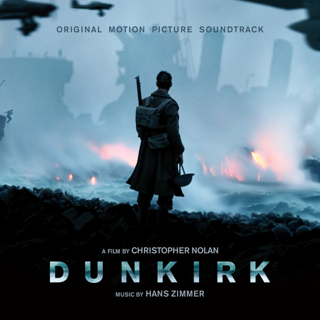
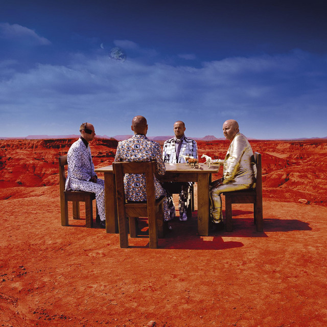

Music has been an important part of my life, and so my taste in it changed and shifted as I grew up. Although I don't usually stick to one artist and like music of most kind, the most common artists I've been listening to are: Twenty One Pilots, Metallica, Audioslave, Queens of the Stone Age, AM, and more. Many of the bands I listen to were shown to me by friends, family members, and sometimes even strangers. Those cases are especially important to me, as I feel like sharing music and seeing someone enjoy it is a special thing. I wish to treat this page as a sort of time capsule, which is why I'll focus on some artists and certain music more, in order to reflect what I'm listening to at the moment.
I've been collecting vinyls for around a year now and it amounts to around twenty records now. I store them away from sunlight, in seperate folders in order to protect the sleeves. I find it bothersome to handle them because of how fragile they are, but i do believe physical media is worth it, especially after I had some of the songs I liked removed from music streaming apps. When it comes to vinyl variants, I personally prefer colourful ones over the more common, plain black ones, but I will often get those as well.
I like physical media. While it is convenient to have something downloaded on my phone if just for the easy access, I like having a sort of guarantee it won't be removed or deleted. I also just enjoy having a physical copy of something I like a lot.

The Clancy album is my current favourite for a variety of reasons. I discovered it after a stranger played one of the songs, "Overcompensate", at a karaoke night, after which I gave it a listen. It quickly became my favourite and I began listening to the rest of the album and then all the other albums. The vinyl version I have is transparent with a red splatter.

Scaled and Icy is another Twenty One Pilots album, and currently the only one lacking from the Trench storyline. While it's not my favourite of the albums, I still somewhat like it.

This album contains the soundtrack composed by Hans Zimmer from the movie "Dunkirk", a movie which has one of my favourite shots of all time.

I'd like this album mostly because of the "Knights of Cydonia" song, which has a guitar solo I adore. This song in particular has been with me for a longer while now.